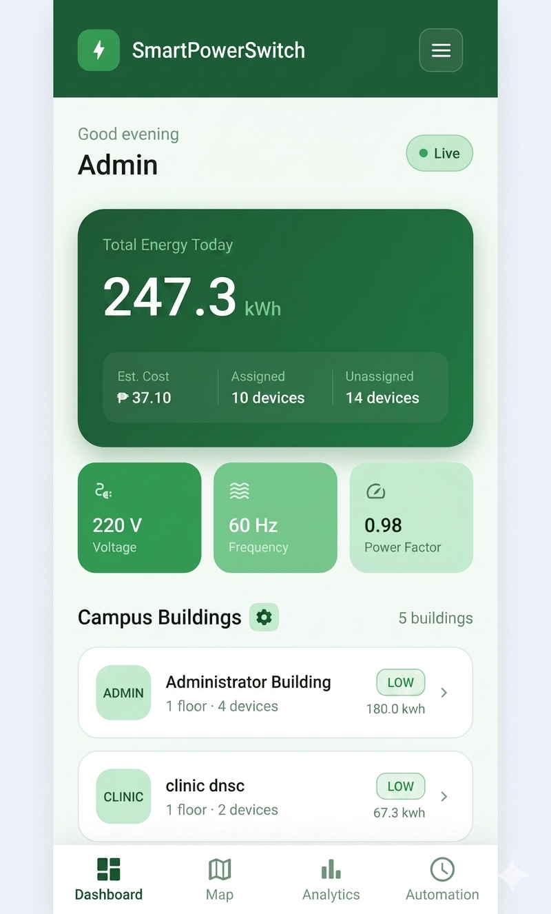
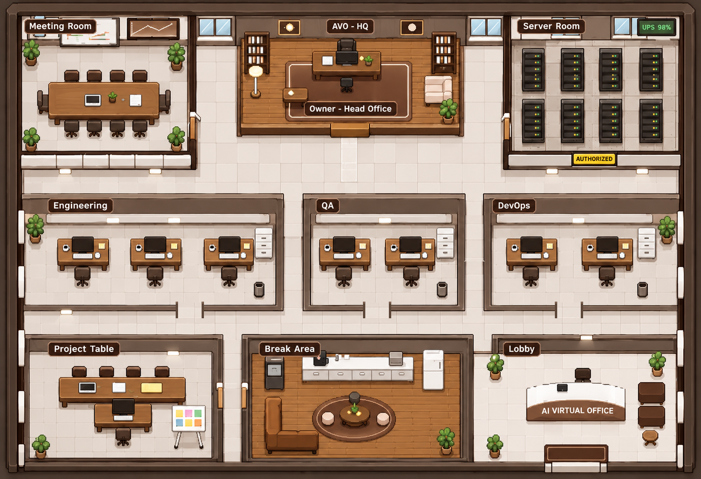
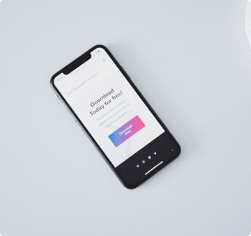

↗PROJECT PROMOTIONAL IMAGESmart Switch
↗Campus energy monitoring across web and mobile, connected to real-world devices.
WEB · MOBILE · CONNECTED EXPERIENCES
Hi, I’m Lowrence Joy Alburo. A full-stack developer turning everyday problems into useful, intuitive digital experiences.
Built with curiosity.
Designed for people.
01 / SELECTED WORK
A few things I’ve been building.
Practical ideas. Purposeful experiences.

↗PROJECT PROMOTIONAL IMAGECampus energy monitoring across web and mobile, connected to real-world devices.
Connecting surplus-food donors with verified community kitchens.

↗ORIGINAL PROJECT OFFICE MAPAn AI development workforce inside a live, interactive 2D office.

↗ORIGINAL PORTFOLIO COVERA career platform built with Laravel and PHP.
 ↗ORIGINAL PORTFOLIO COVER
↗ORIGINAL PORTFOLIO COVERA Flutter mobile application for school services.
A Java banking system project.
Small details. Meaningful solutions. Always learning along the way.
I enjoy building things that make everyday life a little easier.
I’m Lowrence, a full-stack developer working across web, mobile, and connected applications. My toolkit includes Laravel, PHP, Flutter, Dart, and Firebase — but the starting point is always the person using the product.
From a responsive interface to the logic behind it, I care about clear experiences, thoughtful details, and code that serves a purpose.
Useful, approachable experiences.
Learning through building.
03 / WHAT I BRING
A connected skill set for turning
an idea into something people can use.
Responsive interfaces and practical backend solutions, built to work together.
Thoughtful mobile interfaces with connected data and a consistent experience.
Connecting software with the physical world through useful controls and interfaces.
HAVE SOMETHING IN MIND?
A project, a collaboration, or just a hello — I’d love to hear from you.
Let’s build something ↗